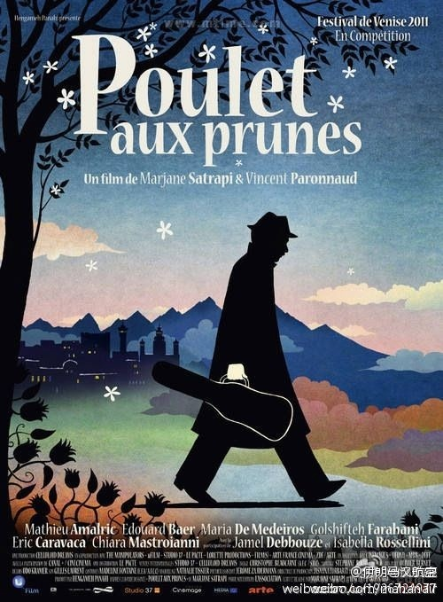

没错！我们附近的狗都放出来瞎跑且找不到主人。且都是大型狗，跟马似的。且凶得一塌糊涂，攻击性很强。每次回家或者出门我都心惊胆战…… //@王风风风:BSO住在高档社区啊。我们这种低档社区的，都是人拴着绳子被狗溜。---:抱歉，此微博已被作者删除。查看帮助： 网页链接
伊朗电影也粉碎了中国文化人给自己无能和不努力找的政治气候借口 //@苏三-文明学:伊朗电影与中国一比就让中国电影人什么话都没了。什么叫文化底蕴，看他们的电影也是个明证。@伊朗马汉航空:【伊朗电影推荐】《梅子鸡之味》，2011年作品，出自《我在伊朗长大》同一导演之手。改编自玛嘉·莎塔琵的绘本。故事叙述方式很特别，画面优美，情到深处人心碎--你是我生命中的一声叹息。网页链接 